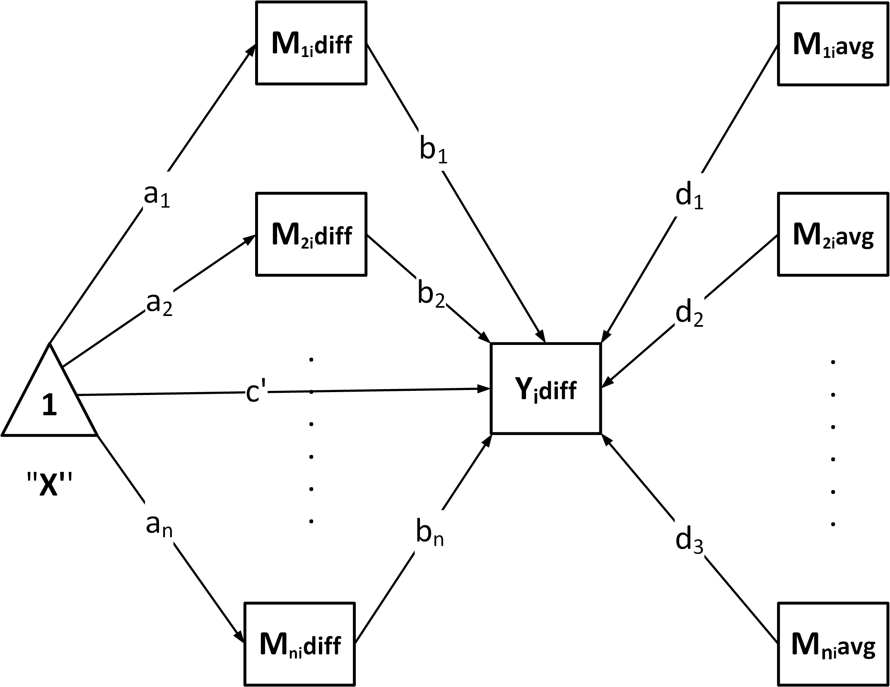
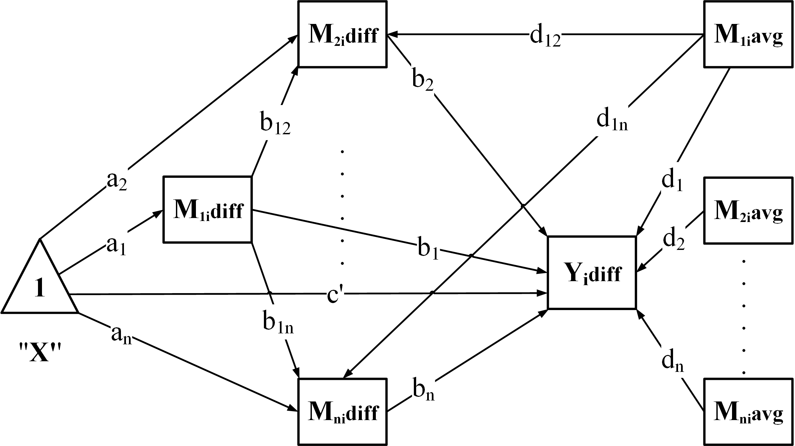

Introduction
The wsMed function is designed for two condition
within-subject mediation analysis, incorporating SEM models through the
lavaan package and Monte Carlo simulation methods. This
document provides a detailed description of the function’s parameters,
workflow, and usage, along with an example demonstration.
Main Function Overview
The wsMed() function automates the full workflow for
two-condition within-subject mediation analysis. Its main steps are:
Validate inputs – check dataset structure, mediation model type (
form), and missing-data settings.Prepare data – compute difference scores (
Mdiff,Ydiff) and centered averages (Mavg) from the two-condition variables.-
Build the model – generate SEM syntax according to the chosen structure:
-
"P": Parallel mediation
-
"CN": Chained / serial mediation
-
"CP": Chained + Parallel
-
"PC": Parallel + Chained
-
-
Fit the model – estimate parameters while handling missing data:
-
"DE": listwise deletion -
"FIML": full-information ML -
"MI": multiple imputation
-
-
Compute inference – provide confidence intervals using:
-
Bootstrap
(
ci_method = "bootstrap") -
Monte Carlo (
ci_method = "mc")
-
Bootstrap
(
Optional: Standardization – if
standardized = TRUE, return standardized effects with CIs.-
Optional: Covariates – automatically center and include:
-
Between-subject covariates (
C): mean-centered and added to all regressions. -
Within-subject covariates (
C_C1,C_C2): difference scores and centered averages are computed and included.
-
Between-subject covariates (
The dataset should be in wide format, where each participant has separate columns for measurements in different conditions. Specifically, each mediator variable (e.g., M1) should be split into two columns: one for Condition 1 and one for Condition 2. Similarly, the outcome variable should also have separate columns for each condition. This structure ensures that within-subject changes can be properly analyzed.
Calling wsMed
## Warning: 程序包'lavaan'是用R版本4.4.2 来建造的## This is lavaan 0.6-19
## lavaan is FREE software! Please report any bugs.Examples at a Glance
Below is a quick guide to what each example demonstrates so you can jump to the one you need.
Example 1 — Quick Start.
Example 2 — Using Bootstrap Confidence Intervals
Example 3 — Requesting Standardized Effects.
Example 4 — Handling Missing Data
Example 5 — Moderated mediation with a continuous moderator.
Example 6 — Moderated mediation with a categorical moderator.
Example 7 — Covariates (within-subject & between-subject).
Example
Dateset
The dataset should be in wide format, where each participant has separate columns for measurements in different conditions. Specifically, each mediator variable (e.g., M1) should be split into two columns: one for Condition 1 and one for Condition 2. Similarly, the outcome variable should also have separate columns for each condition. This structure ensures that within-subject changes can be properly analyzed.
For example, the first rows of example_data look like
this:
head(example_data)## # A tibble: 6 × 14
## A1 A2 A3 B1 B2 B3 C1 C2 C3 D1 D2 D3 Group W_Group
## <dbl> <dbl> <dbl> <dbl> <dbl> <dbl> <dbl> <dbl> <dbl> <dbl> <dbl> <dbl> <fct> <fct>
## 1 0.520 0.348 0.0518 0.0935 0.254 0.502 0 0.240 0 0.702 0.485 0.314 low low
## 2 0.329 0.121 0.291 0.259 0.328 0.152 0.116 0 0.118 0 0.392 0.0133 high high
## 3 0.208 0.168 0.156 0.295 0.342 0.490 0.237 0.214 0.137 0.336 0.706 0.521 med med
## 4 0.565 0.175 0.401 0.622 0.450 0.536 0.285 0.395 0.143 0.532 0.437 0.290 med med
## 5 0.514 0.767 0.598 0.653 0.448 0.525 0.284 0.464 0.161 0.456 0.351 0.217 med med
## 6 0.763 0.567 0.803 0.766 0.716 0.554 0.260 0.313 0.177 0.813 0.666 1 med medHow to interpret these columns:
- A1 / A2 – the same mediator A,measured under
Condition 1 and Condition 2.
- B1 / B2 – the same mediator B, measured under
Condition 1 and Condition 2.
- C1 / C2 – the outcome variable measured under each condition.
Example 1 – Quick Start
result1 <- wsMed(
data = example_data, # Input dataset with scores from both conditions
M_C1 = c("A1", "B1"), # Mediators measured under Condition 1
M_C2 = c("A2", "B2"), # Same mediators measured under Condition 2
Y_C1 = "C1", # Outcome under Condition 1
Y_C2 = "C2", # Outcome under Condition 2
form = "P" # Model type: "P" | "CN" | "CP" | "PC"
)
print(result1)Key Arguments in Example 1
-
data– a data frame containing raw scores; variables must be named consistently with suffix1/2for the two conditions. -
M_C1,M_C2– character vectors with the mediator names for each condition. -
Y_C1,Y_C2– outcome variable names for each condition. -
form– specifies the mediation model:-
"P"– parallel mediation -
"CN"– chained / serial mediation (e.g., A → B → Y) -
"CP"– combined parallel + serial model -
"PC"– parallel-to-serial model (alternative structure)
-
Additional options often used with Example 1: -
alpha – set the significance level for Monte Carlo
confidence intervals (default = 0.05). -
print(..., digits = k) – control number of decimals printed
in the summary. - R – number of Monte Carlo draws (default
= 20000L).
By default, wsMed() uses Monte Carlo confidence
intervals if ci_method is not specified.
You can adjust the settings as follows:
result1 <- wsMed(
data = example_data,
M_C1 = c("A1", "B1"),
M_C2 = c("A2", "B2"),
Y_C1 = "C1",
Y_C2 = "C2",
form = "P",
alpha = 0.01, # 99% confidence intervals
R = 5000 # reduce MC draws for faster runtime in demos
)
# Control printed precision
print(result1, digits = 4) # Use 'digits' to control decimal placesExample 2 – Using Bootstrap Confidence Intervals
In this example we demonstrate how to switch from Monte Carlo to bootstrap confidence intervals, and how to control the number of replicates and the random seed.
result2 <- wsMed(
data = example_data, # Input dataset with scores from both conditions
M_C1 = c("A1", "B1"), # Mediators measured under Condition 1
M_C2 = c("A2", "B2"), # Same mediators measured under Condition 2
Y_C1 = "C1", # Outcome under Condition 1
Y_C2 = "C2", # Outcome under Condition 2
form = "P", # Parallel mediation, also can use "CN","CP","PC"
# additional argument for bootstrap
ci_method = "bootstrap", # Use bootstrap CI instead of Monte Carlo CI
boot_ci_type = "perc", # CI type: "perc" | "bc" | "bca.simple"
bootstrap = 2000, # Number of bootstrap replicates
iseed = 123 # Seed for reproducibility
)
print(result2)Key Arguments in This Example
-
ci_method– choose the CI engine ("bootstrap"or"mc"). -
boot_ci_type–"perc"is percentile CI and"bc"is bias-corrected percentile CI. -
bootstrap– number of bootstrap samples to draw (default = 2000). -
iseed– random seed to ensure reproducible bootstrap results.
You can combine these with other arguments, such as
alpha in wsMed() to set a different confidence level, or
digits in print() to control the number of decimal
places.
Example 3 – Requesting Standardized Effects
You can ask wsMed() to compute standardized path
coefficients and effects by setting
standardized = TRUE.
result3 <- wsMed(
data = example_data,
M_C1 = c("A1","B1","C1"), # Three mediators measured under Condition 1
M_C2 = c("A2","B2","C2"), # Same mediators measured under Condition 2
Y_C1 = "D1", # Outcome variable in Condition 1
Y_C2 = "D2", # Outcome variable in Condition 2
form = "CN", # "CN" = Chained / Serial mediation
standardized = TRUE, # Request standardized path coefficients and effects
alpha = 0.05 # Use 95% CI for standardized effects, also can use`0.01` for 99% CI
)
# Print summary with more decimals for clarity
print(result3)Example 4 – Handling Missing Data
wsMed() supports three strategies via the
Na argument:
-
"DE"— listwise deletion (default ifNais omitted). -
"MI"— multiple imputation (via the mice package). -
"FIML"— full information maximum likelihood (via lavaan).
Note: When Na = "MI", only monte carlo
CIs are available, bootstrap CIs are not available.
Generate a dataset with missing data:
library(knitr)
data(example_data)
set.seed(123)
example_dataN <- mice::ampute(
data = example_data,
prop = 0.1,
)$amp## Warning: Data is made numeric because the calculation of weights requires numeric data
# (A) Multiple Imputation (MI) + Monte Carlo CI
result4_mi <- wsMed(
data = example_data, # dataset with missing values (wide format)
M_C1 = c("A1","B1"), # mediators under Condition 1
M_C2 = c("A2","B2"), # mediators under Condition 2
Y_C1 = "C1", # outcome under Condition 1
Y_C2 = "C2", # outcome under Condition 2
form = "P", # parallel mediation
Na = "MI", # handle missing data via Multiple Imputation
standardized = TRUE # Request standardized path coefficients and effects
)
print(result4_mi)
# (B) Full Information Maximum Likelihood (FIML) + Bootstrap CI
result4_fiml <- wsMed(
data = example_data, # dataset with missing values (wide format)
M_C1 = c("A1","B1"), # mediators under Condition 1
M_C2 = c("A2","B2"), # mediators under Condition 2
Y_C1 = "C1",
Y_C2 = "C2",
form = "CN", # chained/serial mediation (A -> B -> Y)
# additional argument for FIML and bootstrap
Na = "FIML", # full information maximum likelihood
ci_method = "bootstrap", # use Bootstrap CIs with FIML
bootstrap = 2000, # number of resamples (small for demo; typical 2000)
boot_ci_type = "perc", # CI type: "perc" or "bc"
iseed = 123 # seed for bootstrap reproducibility
)
print(result4_fiml)Example 5 – Moderated mediation with a continuous moderator
W
Continuous moderator W + serial-parallel mediation + missing data
result5 <- wsMed(
data = example_dataN,
M_C1 = c("A1","B1","C1"),# A1/B1/C1 is A/B/C mediator variable in condition 1
M_C2 = c("A2","B2","C2"),# A2/B2/C2 is A/B/C mediator variable in condition 2
Y_C1 = "D1",# D1 is outcome variable in condition 1
Y_C2 = "D2",# D2 is outcome variable in condition 2
form = "CP",# chained + parallel mediation, M1 is chained mediator by default
W = "D3",# name of the moderator variable (here "D3")
W_type = "continuous", # type of the moderator ("continuous" or "categorical")
MP = c("a1","b2","d1","cp","b_1_2","d_1_2"),
# MP: which regression paths are moderated by W.
# a1 : X -> M1
# b2 : M2 -> Y
# d1 : M1avg -> Y
# cp : X -> Y
# b_1_2: M1 -> M2
# d_1_2: M1avg -> M2avg
)
print(result5)
# Conditional indirect effect through X -> M1 -> M2 -> Y (indices 1_2)
plot_moderation_curve(result5, "indirect_effect_1_2")
# Conditional path coefficient labeled b_1_2 (M1 -> M2)
plot_moderation_curve(result5, "b_1_2")
# Conditional total effect
plot_moderation_curve(result5, "total_effect")Key Arguments in This Example
-
W– name of the moderator variable (must be a column indata). -
W_type– type of the moderator:-
"continuous"– moderator is numeric;wsMed()will estimate conditional effects across the range ofW. -
"categorical"– moderator is a factor/character; model estimates effects for each level or group.
-
-
MP– character vector specifying which regression paths are moderated byW.-
"a1"– first-stage path (X → M1diff) -
"b2"– second-stage path (M2diff → Y) -
"d1"– cross path (M1avg → Y) -
"cp"– direct effect (X → Y) -
"b_1_2"– chain path (M1 → M2) -
"d_1_2"– cross/average path (M1avg → M2avg)
-
Tip: After fitting the model, use
plot_moderation_curve()to visualize conditional effects or path coefficients as a function ofW. Typical targets include"indirect_1_2","b_1_2", and"total_effect"as shown above.
Or, you can use bootstrap confidence intervals, switch to a parallel mediation model, and choose a different set of moderated paths:
result5 <- wsMed(
data = example_dataN,
M_C1 = c("A1","B1","C1"),# A1/B1/C1 is A/B/C mediator variable in condition 1
M_C2 = c("A2","B2","C2"),# A2/B2/C2 is A/B/C mediator variable in condition 2
Y_C1 = "D1",# D1 is outcome variable in condition 1
Y_C2 = "D2",# D2 is outcome variable in condition 2
form = "P",# chained + parallel mediation, M1 is chained mediator by default
W = "D3", # name of the moderator variable (here "D3")
W_type = "continuous", # type of the moderator ("continuous" or "categorical")
bootstrap = 2000, # Use bootstrap
MP = c("a1","b1","d1","cp"),
# MP: which regression paths are moderated by W.
# a1 : X -> M1diff
# b1 : M1diff -> Y
# d1 : M1avg -> Y
# cp : X -> Y
)
# Conditional indirect effect through X -> M1 -> M2 -> Y (indices 1_2)
plot_moderation_curve(result5, "indirect_effect_1")
# Conditional path coefficient labeled b_1_2 (M1 -> M2)
plot_moderation_curve(result5, "b1")
# Conditional total effect
plot_moderation_curve(result5, "total_effect")Example 6 – Moderated mediation with a categorical moderator
W
Generate a categorical moderator Group
example_data2 <- example_data
set.seed(123)
example_data2$Group <- factor(
sample(c("G1", "G2", "G3"),
nrow(example_data2),
replace = TRUE)
) # generate dataset with categorical WThis example demonstrates moderated mediation with a
categorical moderator W.
result6 <- wsMed(
data = example_data2, # dataset (wide format)
M_C1 = c("A1","B1","C1"), # mediators under Condition 1 (A/B/C)
M_C2 = c("A2","B2","C2"), # same mediators under Condition 2
Y_C1 = "D1", # outcome under Condition 1
Y_C2 = "D2", # outcome under Condition 2
W = "Group", # categorical moderator (factor/character)
W_type = "categorical", # declare moderator type
MP = c("a1","b1","d1","cp","b_1_2","b_2_3"),
# MP: which regression paths are moderated by W.
# a1 : X -> M1diff
# b1 : M1diff -> Y
# d1 : M1avg -> Y
# cp : X -> Y
# b_1_2: M1diff -> M2diff
# b_2_3: M2diff -> M3diff
form = "CN" # chained/serial mediation
)
print(result6)Key Arguments in This Example
data— the dataset in wide format, with each participant as a row and condition-specific variables as separate columns.M_C1,M_C2— character vectors naming the mediators under Condition 1 and Condition 2. In this example we specify three mediators (A, B, C), so the serial chain is A → B → C → Y.Y_C1,Y_C2— outcome variable names under Condition 1 and Condition 2.W— the moderator variable; here"Group"is a categorical variable with multiple levels.W_type = "categorical"— instructswsMed()to estimate group-specific conditional effects and to compute pairwise contrasts relative to the reference level ofW.-
MP— character vector specifying which regression paths are moderated byW.-
a1– first-stage path (X → M1diff) -
b1– mediator 1 path to Y (M1diff → Y) -
d1– cross/average path (M1avg → Y) -
cp– direct effect (X → Y) -
b_1_2– chained path from M1 to M2 -
b_2_3– chained path from M2 to M3
-
form = "CN"— selects the chained/serial mediation model structure. Mediators are linked sequentially, so indirect effects include single-step and multi-step paths.
Example 7 – Covariates
In this example,three covariates are included:
D3is specified as a between-subject covariate, representing a stable individual difference (e.g., trait-level variable). It is mean-centered and entered as a predictor in all regression models.-
D1andD2form a within-subject covariate pair, assumed to be measured under Condition 1 and Condition 2, respectively. The function automatically computes:-
Cw1diff = D2 - D1(difference score) Cw1avg = mean-centered average of D1 and D2
-
These covariates are included as predictors of both the mediators and the outcome in the SEM model.
result7 <- wsMed(
data = example_data, #dataset
M_C1 = c("A1","B1"), # A1/B1 is A/B mediator variable in condition 1
M_C2 = c("A2","B2"), # A2/B2 is A/B mediator variable in condition 2
Y_C1 = "C1", # C1 is outcome variable in condition 1
Y_C2 = "C2", # C2 is outcome variable in condition 2
form = "P", # Parallel mediation
C_C1 = "D1", # within-subject covariate (e.g., measured under D1)
C_C2 = "D2", # within-subject covariate (e.g., measured under C2)
C = "D3" # between-subject covariates
)
print(result7)Key Arguments in This Example
-
C_C1,C_C2— character vectors naming within-subject covariates measured under Condition 1 and Condition 2.wsMed()automatically computes:-
Cw1diff— difference score (C_C2 − C_C1) -
Cw1avg— mean-centered average of the two conditions
These transformed covariates are included as predictors for all mediators and the outcome.
-
C— character vector naming between-subject covariates (e.g., stable traits). They are automatically mean-centered and entered into all regression equations.form— model structure ("P"here, but can be"CN","CP","PC").
Only including within-subject covariate D1 and D2
result7 <- wsMed(
data = example_data, #dataset
M_C1 = c("A1","B1"), # A1/B1 is A/B mediator variable in condition 1
M_C2 = c("A2","B2"), # A2/B2 is A/B mediator variable in condition 2
Y_C1 = "C1", # C1 is outcome variable in condition 1
Y_C2 = "C2", # C2 is outcome variable in condition 2
form = "P", # Parallel mediation
C_C1 = "D1", # within-subject covariate (e.g., measured under D1)
C_C2 = "D2", # within-subject covariate (e.g., measured under C2)
)
print(result7)Only including between-subject covariate D3
result7 <- wsMed(
data = example_data, #dataset
M_C1 = c("A1","B1"), # A1/B1 is A/B mediator variable in condition 1
M_C2 = c("A2","B2"), # A2/B2 is A/B mediator variable in condition 2
Y_C1 = "C1", # C1 is outcome variable in condition 1
Y_C2 = "C2", # C2 is outcome variable in condition 2
form = "P", # Parallel mediation
C = "D3" # between-subject covariates
)
print(result7)Understanding the Output
The printed output from wsMed() is divided into several
sections. Below we briefly explain what each section contains and how to
read it.
1. Multiple Mediation (No Moderator)
We use Example 4 (parallel mediation, MI + Monte Carlo CI) as a template. Each section in the printed output serves the following purpose:
# (A) Multiple Imputation (MI) + Monte Carlo CI
result4_mi <- wsMed(
data = example_data, # dataset with missing values (wide format)
M_C1 = c("A1","B1"), # mediators under Condition 1
M_C2 = c("A2","B2"), # mediators under Condition 2
Y_C1 = "C1", # outcome under Condition 1
Y_C2 = "C2", # outcome under Condition 2
form = "P", # parallel mediation
Na = "MI", # handle missing data via Multiple Imputation
standardized = TRUE # Request standardized path coefficients and effects
)
print(result4_mi)##
##
## *************** VARIABLES ***************
## Outcome (Y):
## Condition 1: C1
## Condition 2: C2
## Mediators (M):
## M1:
## Condition 1: A1
## Condition 2: A2
## M2:
## Condition 1: B1
## Condition 2: B2
## Sample size (rows kept): 100
##
##
## *************** MODEL FIT ***************
##
##
## |Measure | Value|
## |:---------|------:|
## |Chi-Sq | 11.436|
## |df | 5.000|
## |p | 0.043|
## |CFI | 0.000|
## |TLI | -1.130|
## |RMSEA | 0.113|
## |RMSEA Low | 0.018|
## |RMSEA Up | 0.202|
## |SRMR | 0.076|
##
##
## ************* TOTAL / DIRECT / TOTAL-IND (MC) *************
##
##
## |Label | Estimate| SE| 2.5%CI.Lo| 97.5%CI.Up|
## |:--------------|--------:|-----:|---------:|----------:|
## |Total effect | 0.015| 0.016| -0.017| 0.048|
## |Direct effect | 0.016| 0.016| -0.016| 0.048|
## |Total indirect | -0.001| 0.004| -0.010| 0.008|
##
## Indirect effects:
##
##
## |Label | Estimate| SE| 2.5%CI.Lo| 97.5%CI.Up|
## |:-----|--------:|-----:|---------:|----------:|
## |ind_1 | 0.001| 0.003| -0.005| 0.008|
## |ind_2 | -0.002| 0.003| -0.009| 0.003|
##
## Indirect-effect key:
##
##
## |Ind |Path |
## |:-----|:--------------------|
## |ind_1 |X -> M1diff -> Ydiff |
## |ind_2 |X -> M2diff -> Ydiff |
##
##
## *************** MODERATION EFFECTS (d-paths, MC) ***************
##
##
## |Coefficient | Estimate| SE| 2.5%CI.Lo| 97.5%CI.Up|
## |:-----------|--------:|-----:|---------:|----------:|
## |d1 | -0.062| 0.091| -0.242| 0.116|
## |d2 | -0.073| 0.083| -0.235| 0.090|
##
##
## *************** MODERATION KEY (d-paths) ***************
##
##
## |Coefficient |Path |Moderated |
## |:-----------|:--------------|:---------------|
## |d1 |M1avg -> Ydiff |M1diff -> Ydiff |
## |d2 |M2avg -> Ydiff |M2diff -> Ydiff |
##
##
## *************** CONTRAST INDIRECT EFFECTS (No Moderator) ***************
##
##
## |Contrast | Estimate| SE| 2.5%CI.Lo| 97.5%CI.Up|
## |:-------------------------|--------:|-----:|---------:|----------:|
## |indirect_2 - indirect_1 | -0.003| 0.004| -0.012| 0.005|
##
##
## *************** C1-C2 COEFFICIENTS (No Moderator) ***************
##
##
## |Coeff | Estimate| SE| 2.5%CI.Lo| 97.5%CI.Up|
## |:-----|--------:|-----:|---------:|----------:|
## |X1_b1 | -0.067| 0.101| -0.264| 0.131|
## |X0_b1 | -0.004| 0.102| -0.206| 0.194|
## |X1_b2 | -0.150| 0.099| -0.344| 0.044|
## |X0_b2 | -0.077| 0.098| -0.270| 0.116|
##
##
## *************** REGRESSION PATHS (MC) ***************
##
##
## |Path |Label | Estimate| SE| 2.5%CI.Lo| 97.5%CI.Up|
## |:--------------|:-----|--------:|-----:|---------:|----------:|
## |Ydiff ~ M1diff |b1 | -0.036| 0.091| -0.213| 0.143|
## |Ydiff ~ M1avg |d1 | -0.062| 0.091| -0.242| 0.116|
## |Ydiff ~ M2diff |b2 | -0.112| 0.090| -0.291| 0.061|
## |Ydiff ~ M2avg |d2 | -0.073| 0.083| -0.235| 0.090|
##
##
## *************** INTERCEPTS (MC) ***************
##
##
## |Intercept |Label | Estimate| SE| 2.5%CI.Lo| 97.5%CI.Up|
## |:---------|:-----|--------:|-----:|---------:|----------:|
## |Ydiff~1 |cp | 0.016| 0.016| -0.016| 0.048|
## |M1diff~1 |a1 | -0.027| 0.018| -0.061| 0.007|
## |M2diff~1 |a2 | 0.014| 0.018| -0.020| 0.049|
## |M1avg~1 | | -0.000| 0.000| -0.000| -0.000|
## |M2avg~1 | | 0.000| 0.000| 0.000| 0.000|
##
##
## *************** VARIANCES (MC) ***************
##
##
## |Variance |Label | Estimate| SE| 2.5%CI.Lo| 97.5%CI.Up|
## |:--------------|:-----|--------:|-----:|---------:|----------:|
## |Ydiff~~Ydiff | | 0.026| 0.004| 0.018| 0.033|
## |M1diff~~M1diff | | 0.031| 0.004| 0.022| 0.039|
## |M2diff~~M2diff | | 0.032| 0.005| 0.023| 0.041|
## |M1avg~~M1avg | | 0.034| 0.000| 0.034| 0.034|
## |M2avg~~M2avg | | 0.041| 0.000| 0.041| 0.041|
##
##
## *************** STANDARDIZED (MC) ***************
##
##
## |Parameter | Estimate| SE| R| 2.5%| 97.5%|
## |:--------------|--------:|-----:|---------:|------:|------:|
## |cp | 0.098| 0.100| 20000.000| -0.097| 0.297|
## |b1 | -0.039| 0.096| 20000.000| -0.225| 0.151|
## |d1 | -0.070| 0.100| 20000.000| -0.265| 0.130|
## |b2 | -0.124| 0.096| 20000.000| -0.311| 0.066|
## |d2 | -0.091| 0.100| 20000.000| -0.281| 0.110|
## |a1 | -0.155| 0.102| 20000.000| -0.355| 0.040|
## |a2 | 0.081| 0.101| 20000.000| -0.115| 0.280|
## |Ydiff~~Ydiff | 0.966| 0.041| 20000.000| 0.832| 0.989|
## |M1diff~~M1diff | 1.000| 0.000| 20000.000| 1.000| 1.000|
## |M2diff~~M2diff | 1.000| 0.000| 20000.000| 1.000| 1.000|
## |M1avg~~M1avg | 1.000| 0.000| 20000.000| 1.000| 1.000|
## |M1avg~~M2avg | 0.290| 0.000| 20000.000| 0.290| 0.290|
## |M2avg~~M2avg | 1.000| 0.000| 20000.000| 1.000| 1.000|
## |M1avg~1 | -0.000| 0.000| 20000.000| -0.000| -0.000|
## |M2avg~1 | 0.000| 0.000| 20000.000| 0.000| 0.000|
## |indirect_1 | 0.006| 0.018| 20000.000| -0.029| 0.048|
## |indirect_2 | -0.010| 0.017| 20000.000| -0.052| 0.019|
## |total_indirect | -0.004| 0.025| 20000.000| -0.058| 0.047|
## |total_effect | 0.094| 0.101| 20000.000| -0.101| 0.295|VARIABLES Lists all outcome variables, mediators (with Condition 1 / 2 names), and the final sample size used in the analysis.
MODEL FIT Reports SEM model fit statistics from
lavaan: χ², df, p-value, CFI, TLI, RMSEA (with CI), and SRMR. Use these to assess whether the SEM model adequately fits the data.TOTAL / DIRECT / TOTAL-IND (MC) Shows the total effect, direct effect (c′ path), and total indirect effect, with Monte Carlo or bootstrap-based SEs and confidence intervals.
Indirect effects Breaks down the total indirect effect into individual paths (e.g., X → M1 → Y, X → M2 → Y), with point estimates, SEs, and CIs.
Indirect-effect key Provides a legend mapping labels like
ind_1,ind_2,ind_1_2to the actual mediator paths they represent.MODERATION EFFECTS (d-paths, MC) When d-paths are present (paths using mediator averages), lists their coefficients and CIs. Appears even in no-moderator models for completeness.
MODERATION KEY (d-paths) Explains which d-path coefficients correspond to which paths in the model.
CONTRAST INDIRECT EFFECTS (No Moderator) Displays pairwise contrasts between indirect effects (e.g., indirect_2 − indirect_1) with SEs and CIs.
C1–C2 COEFFICIENTS (No Moderator) Shows regression coefficients linking Condition 1 / Condition 2 scores (e.g., X1_b1, X0_b1), useful for checking consistency across conditions.
REGRESSION PATHS (MC) Lists parameter estimates for all regression paths, including a, b, d, and cp paths, with SEs and Monte Carlo CIs.
INTERCEPTS (MC) Estimated intercepts for mediators and outcome equations.
VARIANCES (MC) Residual variances for mediators and outcome variables.
STANDARDIZED (MC) Provides standardized estimates for all parameters (if
standardized = TRUE), including indirect and total effects.
2. Moderated Mediation
When a continuous moderator (W) and a set of moderated
paths (MP) are specified, print.wsMed()
produces additional sections to help interpret conditional effects.
result5 <- wsMed(
data = example_dataN,
M_C1 = c("A1","B1","C1"),# A1/B1/C1 is A/B/C mediator variable in condition 1
M_C2 = c("A2","B2","C2"),# A2/B2/C2 is A/B/C mediator variable in condition 2
Y_C1 = "D1",# D1 is outcome variable in condition 1
Y_C2 = "D2",# D2 is outcome variable in condition 2
form = "P",# chained + parallel mediation, M1 is chained mediator by default
W = "D3", # name of the moderator variable (here "D3")
W_type = "continuous", # type of the moderator ("continuous" or "categorical")
bootstrap = 2000, # Use bootstrap
MP = c("a1","b1","d1","cp"),
# MP: which regression paths are moderated by W.
# a1 : X -> M1diff
# b1 : M1diff -> Y
# d1 : M1avg -> Y
# cp : X -> Y
)
print(result5)##
##
## *************** VARIABLES ***************
## Outcome (Y):
## Condition 1: D1
## Condition 2: D2
## Mediators (M):
## M1:
## Condition 1: A1
## Condition 2: A2
## M2:
## Condition 1: B1
## Condition 2: B2
## M3:
## Condition 1: C1
## Condition 2: C2
## Moderators (W):
## W1 : D3
## Sample size (rows kept): 100
##
##
## *************** MODEL FIT ***************
##
##
## |Measure | Value|
## |:---------|------:|
## |Chi-Sq | 19.035|
## |df | 18.000|
## |p | 0.390|
## |CFI | 0.000|
## |TLI | 1.446|
## |RMSEA | 0.025|
## |RMSEA Low | 0.000|
## |RMSEA Up | 0.097|
## |SRMR | 0.055|
##
##
## ************* TOTAL / DIRECT / TOTAL-IND (MC) *************
##
##
## |Label | Estimate| SE| 2.5%CI.Lo| 97.5%CI.Up|
## |:--------------|--------:|-----:|---------:|----------:|
## |Total effect | -0.040| 0.018| -0.076| -0.004|
## |Direct effect | -0.040| 0.018| -0.075| -0.004|
## |Total indirect | -0.000| 0.005| -0.010| 0.009|
##
## Indirect effects:
##
##
## |Label | Estimate| SE| 2.5%CI.Lo| 97.5%CI.Up|
## |:-----|--------:|-----:|---------:|----------:|
## |ind_1 | 0.001| 0.003| -0.003| 0.008|
## |ind_2 | -0.001| 0.003| -0.008| 0.003|
## |ind_3 | -0.000| 0.003| -0.007| 0.005|
##
## Indirect-effect key:
##
##
## |Ind |Path |
## |:-----|:--------------------|
## |ind_1 |X -> M1diff -> Ydiff |
## |ind_2 |X -> M2diff -> Ydiff |
## |ind_3 |X -> M3diff -> Ydiff |
##
##
## *************** MODERATION EFFECTS (d-paths, MC) ***************
##
##
## |Coefficient | Estimate| SE| 2.5%CI.Lo| 97.5%CI.Up|
## |:-----------|--------:|-----:|---------:|----------:|
## |d1 | -0.042| 0.102| -0.241| 0.162|
## |d2 | 0.022| 0.093| -0.160| 0.203|
## |d3 | -0.120| 0.109| -0.335| 0.094|
##
##
## *************** MODERATION KEY (d-paths) ***************
##
##
## |Coefficient |Path |Moderated |
## |:-----------|:--------------|:---------------|
## |d1 |M1avg -> Ydiff |M1diff -> Ydiff |
## |d2 |M2avg -> Ydiff |M2diff -> Ydiff |
## |d3 |M3avg -> Ydiff |M3diff -> Ydiff |
##
##
## *************** MODERATION RESULTS (Continuous Moderator) ***************
##
## --- Moderated Coefficients ---
##
##
## |Path |BaseCoef |W_dummy | Estimate| SE| 2.5%CI.Lo| 97.5%CI.Up|Sig |
## |:------|:--------|:-------|--------:|-----:|---------:|----------:|:---|
## |bw1_W1 |b1 |D3 | -0.051| 0.448| -0.934| 0.823| |
## |dw1_W1 |d1 |D3 | 0.647| 0.462| -0.248| 1.558| |
## |cpw_W1 |cp |D3 | -0.044| 0.082| -0.206| 0.117| |
## |aw1_W1 |a1 |D3 | 0.041| 0.077| -0.109| 0.191| |
##
## --- Conditional Indirect Effects ---
##
##
## |Path |Mediators | Level| W_value| Estimate| SE| 2.5.%CI.Lo| 97.5.%CI.Up|Sig |
## |:-----------------|:---------|-----:|-------:|--------:|-----:|----------:|-----------:|:---|
## |indirect_effect_1 |1 | -1 SD| 0.223| 0.002| 0.006| -0.009| 0.015| |
## |indirect_effect_1 |1 | 0 SD| 0.452| 0.001| 0.003| -0.003| 0.008| |
## |indirect_effect_1 |1 | +1 SD| 0.681| 0.001| 0.004| -0.008| 0.012| |
##
## --- Indirect Effect Contrasts ---
##
##
## |Path | Contrast| Estimate| SE| 2.5%CI.Lo| 97.5%CI.Up|Sig |
## |:-----------------|-------------------:|--------:|-----:|---------:|----------:|:---|
## |indirect_effect_1 | (0 SD) - (-1 SD)| 0.000| 0.004| -0.008| 0.010| |
## |indirect_effect_1 | (+1 SD) - (-1 SD)| 0.001| 0.007| -0.014| 0.016| |
## |indirect_effect_1 | (+1 SD) - (0 SD)| 0.001| 0.004| -0.007| 0.009| |
##
## --- Moderated Path Coefficients ---
##
##
## |Path | Level| W_value| Estimate| SE| 2.5.%CI.Lo| 97.5.%CI.Up|Sig |
## |:----|-----:|-------:|--------:|-----:|----------:|-----------:|:---|
## |a1 | -1 SD| 0.223| -0.029| 0.025| -0.077| 0.020| |
## |a1 | 0 SD| 0.452| -0.019| 0.018| -0.054| 0.017| |
## |a1 | +1 SD| 0.681| -0.010| 0.026| -0.059| 0.041| |
## |b1 | -1 SD| 0.223| -0.061| 0.142| -0.339| 0.219| |
## |b1 | 0 SD| 0.452| -0.073| 0.099| -0.266| 0.120| |
## |b1 | +1 SD| 0.681| -0.085| 0.143| -0.363| 0.192| |
## |d1 | -1 SD| 0.223| -0.190| 0.155| -0.497| 0.117| |
## |d1 | 0 SD| 0.452| -0.041| 0.102| -0.241| 0.162| |
## |d1 | +1 SD| 0.681| 0.107| 0.139| -0.164| 0.381| |
## |cp | -1 SD| 0.223| -0.031| 0.014| -0.058| -0.003|* |
## |cp | 0 SD| 0.452| -0.040| 0.018| -0.075| -0.004|* |
## |cp | +1 SD| 0.681| -0.049| 0.022| -0.092| -0.005|* |
##
## --- Path Coefficient Contrasts ---
##
##
## |Path | Contrast| Estimate| SE| 2.5%CI.Lo| 97.5%CI.Up|Sig |
## |:----|-------------------:|--------:|-----:|---------:|----------:|:---|
## |a1 | (0 SD) - (-1 SD)| -0.010| 0.018| -0.044| 0.025| |
## |a1 | (+1 SD) - (-1 SD)| -0.019| 0.035| -0.087| 0.050| |
## |a1 | (+1 SD) - (0 SD)| -0.010| 0.018| -0.044| 0.025| |
## |b1 | (0 SD) - (-1 SD)| 0.012| 0.103| -0.189| 0.214| |
## |b1 | (+1 SD) - (-1 SD)| 0.023| 0.206| -0.377| 0.428| |
## |b1 | (+1 SD) - (0 SD)| 0.012| 0.103| -0.189| 0.214| |
## |cp | (0 SD) - (-1 SD)| 0.009| 0.004| 0.001| 0.017|* |
## |cp | (+1 SD) - (-1 SD)| 0.018| 0.008| 0.002| 0.034|* |
## |cp | (+1 SD) - (0 SD)| 0.009| 0.004| 0.001| 0.017|* |
## |d1 | (0 SD) - (-1 SD)| -0.148| 0.106| -0.357| 0.057| |
## |d1 | (+1 SD) - (-1 SD)| -0.297| 0.212| -0.714| 0.114| |
## |d1 | (+1 SD) - (0 SD)| -0.148| 0.106| -0.357| 0.057| |
##
## --- Conditional Total Effect and Total Indirect Effect ---
##
##
## |Effect | Level| W_value| Estimate| SE| 2.5.%CI.Lo| 97.5.%CI.Up|Sig |
## |:--------------|-----:|-------:|--------:|-----:|----------:|-----------:|:---|
## |total_indirect | -1 SD| 0.223| 0.002| 0.005| -0.008| 0.015| |
## |total_indirect | 0 SD| 0.452| 0.001| 0.003| -0.003| 0.008| |
## |total_indirect | +1 SD| 0.681| 0.001| 0.004| -0.008| 0.012| |
## |total_effect | -1 SD| 0.223| -0.028| 0.025| -0.079| 0.021| |
## |total_effect | 0 SD| 0.452| -0.038| 0.018| -0.074| -0.003|* |
## |total_effect | +1 SD| 0.681| -0.049| 0.027| -0.101| 0.003| |
##
##
## *************** REGRESSION PATHS (MC) ***************
##
##
## |Path |Label | Estimate| SE| 2.5%CI.Lo| 97.5%CI.Up|
## |:---------------------|:------|--------:|-----:|---------:|----------:|
## |Ydiff ~ M1diff |b1 | -0.074| 0.099| -0.266| 0.120|
## |Ydiff ~ M1avg |d1 | -0.042| 0.102| -0.241| 0.162|
## |Ydiff ~ M2diff |b2 | -0.081| 0.095| -0.267| 0.105|
## |Ydiff ~ M2avg |d2 | 0.022| 0.093| -0.160| 0.203|
## |Ydiff ~ M3diff |b3 | -0.024| 0.105| -0.229| 0.181|
## |Ydiff ~ M3avg |d3 | -0.120| 0.109| -0.335| 0.094|
## |Ydiff ~ int_M1diff_W1 |bw1_W1 | -0.046| 0.448| -0.934| 0.823|
## |Ydiff ~ int_M1avg_W1 |dw1_W1 | 0.643| 0.462| -0.248| 1.558|
## |Ydiff ~ W1 |cpw_W1 | -0.044| 0.082| -0.206| 0.117|
## |M1diff ~ W1 |aw1_W1 | 0.042| 0.077| -0.109| 0.191|
## |M2diff ~ W1 | | -0.054| 0.080| -0.209| 0.103|
## |M3diff ~ W1 | | -0.055| 0.072| -0.196| 0.088|
##
##
## *************** INTERCEPTS (MC) ***************
##
##
## |Intercept |Label | Estimate| SE| 2.5%CI.Lo| 97.5%CI.Up|
## |:---------------|:-----|--------:|-----:|---------:|----------:|
## |Ydiff~1 |cp | -0.040| 0.018| -0.075| -0.004|
## |M1diff~1 |a1 | -0.019| 0.018| -0.054| 0.017|
## |M2diff~1 |a2 | 0.016| 0.019| -0.020| 0.052|
## |M3diff~1 |a3 | 0.019| 0.017| -0.014| 0.052|
## |M1avg~1 | | -0.006| 0.019| -0.043| 0.031|
## |M2avg~1 | | -0.006| 0.021| -0.046| 0.035|
## |M3avg~1 | | -0.004| 0.018| -0.040| 0.031|
## |int_M1diff_W1~1 | | 0.002| 0.004| -0.005| 0.010|
## |int_M1avg_W1~1 | | 0.012| 0.004| 0.004| 0.019|
## |W1~1 | | -0.009| 0.024| -0.057| 0.038|
##
##
## *************** VARIANCES (MC) ***************
##
##
## |Variance |Label | Estimate| SE| 2.5%CI.Lo| 97.5%CI.Up|
## |:----------------------------|:-----|--------:|-----:|---------:|----------:|
## |Ydiff~~Ydiff | | 0.027| 0.004| 0.020| 0.035|
## |M1diff~~M1diff | | 0.030| 0.004| 0.021| 0.039|
## |M2diff~~M2diff | | 0.033| 0.005| 0.024| 0.042|
## |M3diff~~M3diff | | 0.026| 0.004| 0.019| 0.034|
## |M1avg~~M1avg | | 0.034| 0.005| 0.025| 0.044|
## |M2avg~~M2avg | | 0.040| 0.006| 0.029| 0.052|
## |M3avg~~M3avg | | 0.030| 0.004| 0.022| 0.039|
## |int_M1diff_W1~~int_M1diff_W1 | | 0.002| 0.000| 0.001| 0.002|
## |int_M1avg_W1~~int_M1avg_W1 | | 0.001| 0.000| 0.001| 0.002|
## |W1~~W1 | | 0.054| 0.008| 0.038| 0.069|
# Conditional indirect effect through X -> M1 -> Y (indices_1)
plot_moderation_curve(result5, "indirect_effect_1")![plot of chunk unnamed-chunk-19]()
# Conditional path coefficient labeled b_1_2 (M1 -> M2)
plot_moderation_curve(result5, "b1")![plot of chunk unnamed-chunk-19]()
# Conditional total effect
plot_moderation_curve(result5, "total_effect")![plot of chunk unnamed-chunk-19]()
VARIABLES Lists the outcome variable(s), mediators (with their condition-specific names), moderators, and the sample size used in the analysis.
MODEL FIT Shows standard SEM model fit indices, allowing readers to evaluate whether the specified model adequately represents the data.
TOTAL / DIRECT / TOTAL-IND (MC) Reports the total, direct (c′), and total indirect effects, estimated via Monte Carlo simulations.
Indirect effects & key Presents the estimates for all indirect paths and provides a key showing which mediators each path passes through.
MODERATION EFFECTS (d-paths, MC) Summarizes moderated effects for average-score (d) paths, indicating whether these paths are significantly influenced by the moderator.
MODERATION KEY (d-paths) Provides a mapping of each d-path to its corresponding regression path to clarify which paths are being moderated.
-
MODERATION RESULTS (Continuous Moderator) Contains detailed results for continuous moderators, including:
- Moderated Coefficients — estimates for interaction terms.
- Conditional Indirect Effects — indirect effects at different moderator levels.
- Indirect Effect Contrasts — pairwise comparisons of indirect effects.
- Moderated Path Coefficients — conditional estimates for key paths at each moderator level.
- Path Coefficient Contrasts — comparisons of path coefficients across moderator levels.
- Conditional Total and Total Indirect Effects — total effects reported at each moderator level.
REGRESSION PATHS (MC) Lists estimates for all unmoderated regression paths in the model.
INTERCEPTS (MC) Provides intercept estimates for mediator and outcome equations.
VARIANCES (MC) Reports residual variances for mediators, outcomes, and interaction terms.
Tip: Use
plot_moderation_curve(result5, "path_name")to visualize how indirect effects or path coefficients change across the range ofW.
All Parameters Descriptions
The wsMed() function accepts the following
parameters:
| Parameter | Type | Default | Description |
|---|---|---|---|
data |
Data frame | Required | Input dataset of raw scores. |
M_C1 |
String vector | Required | Mediator names under Condition 1. |
M_C2 |
String vector | Required | Mediator names under Condition 2. |
Y_C1 |
String | Required | Outcome under Condition 1. |
Y_C2 |
String | Required | Outcome under Condition 2. |
form |
String | "P" |
Model type: "P", "CN", "CP",
or "PC". |
standardized |
Boolean | FALSE |
Also compute standardized effects. |
Na |
String | "DE" |
Missing-data method: "DE", "FIML", or
"MI". |
ci_method |
String / NULL
|
NULL |
CI engine: "bootstrap" or "mc". If
NULL, defaults to "bootstrap" for
Na = "DE" and "mc" for
Na = "MI"/"FIML". |
bootstrap |
Integer | 1000 |
Bootstrap replicates (used when ci_method = "bootstrap"
for Na = "DE"/"FIML"). |
boot_ci_type |
String | "perc" |
Bootstrap CI type: "perc", "bc", or
"bca.simple". |
R |
Integer | 20000L |
Monte Carlo draws (used when ci_method = "mc"). |
alpha |
Numeric | 0.05 |
Two-sided significance level(s) for unstandardized CIs. |
iseed |
Integer | 123 |
Seed for bootstrap resampling. |
seed |
Integer | 123 |
Seed for Monte Carlo simulation. |
fixed.x |
Boolean | FALSE |
Passed to lavaan; whether exogenous variables are fixed. |
C_C1 |
String vector | NULL |
Within-subject covariates under Condition 1 (length
must match C_C2). |
C_C2 |
String vector | NULL |
Within-subject covariates under Condition 2. |
C |
String vector | NULL |
Between-subject covariates to be mean-centered and added to all regressions. |
C_type |
String | "continuous" |
Type of C: "continuous" or
"categorical". |
W |
String vector | NULL |
Moderator(s). Centering is controlled during data preparation. |
W_type |
String | "continuous" |
Type of W: "continuous" or
"categorical". |
MP |
String vector | NULL |
Which paths are moderated (e.g., "a1",
"b_1_2", "cp"); used to inject
main/interaction terms into the generated model syntax. |
alphastd |
Numeric | 0.05 |
Significance level for standardized CIs. |